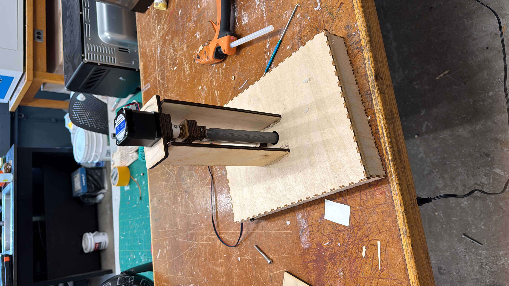
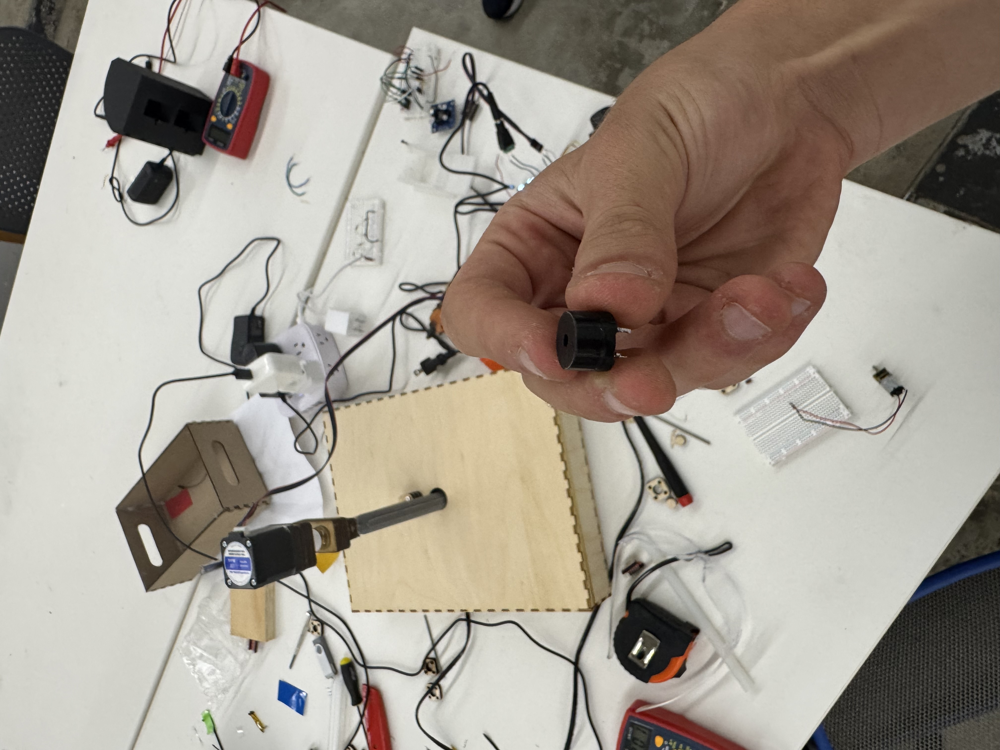
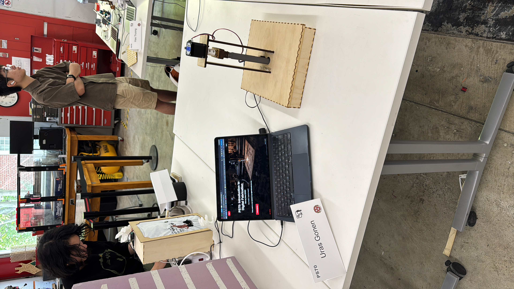

After the MVP, I still had a long way to go. The first thing I wanted to do was create the paper destruction module, which was the stepper motor setup.
Demonstration of the Chromatic Sorter mechanism.
System Inventory
A working first draft of the components used to build Chromatic Sorter.
| Material or Component | Quantity | Purpose |
|---|---|---|
| Seeed Studio XIAO ESP32C3 | 1 | Microcontroller and web interface |
| TCS3200 color sensor | 1 | Detecting the color of the paper |
| Stepper motor | 1 | Moving the destruction module |
| Stepper motor driver | 1 | Controlling the stepper motor |
| Lead screw and nut | 1 set | Creating controlled vertical movement |
| Smooth metal guide rod and bearing | 1 set | Stabilizing the moving mechanism |
| 3D-printed destructor | 1 | Destroying the sorted paper |
| 3D-printed motor coupler | 1 | Connecting the motor to the lead screw |
| Laser-cut plywood | As needed | Box, supports, and motor structure |
| Protoboard | 1 | Permanent circuit assembly |
| Hookup wire and jumper wire | As needed | Electrical connections |
| M3 screws, nuts, and washers | As needed | Securing the laser-cut and printed parts |
| DC power connector and power supply | 1 set | Powering the circuit and motor |
| Glue | As needed | Joining the enclosure and mechanism parts |
| Piezo buzzer (removed) | 1 | Originally added for sound feedback; removed during troubleshooting |
I first built templates to stabilize the metal rod and the stepper motor. I also created a place for the rod to go into the box so it would remain stable. For the destruction part, I made a design that looked like a nuke and 3D printed it. Some of the curves were too thin, so the print broke. I printed it again with supports that I designed myself.
To save time, I used the laser cutter for everything except the destructor. I made some small parts for attaching the destructor to the lead screw with the laser cutter and tapped them for M3 screws so they would remain firm. I then glued the 3D-printed part onto them.
After I made the mechanism work and tested it with my circuit, I realized that my box was too tall. It was also frustrating and time-consuming to create circular holes in the box for the destructor and the paper to pass through. I scrapped the old box and made a new one with precut holes, reducing its height from four inches to two inches.

The redesigned two-inch-tall box with the mechanism mounted on top.
With the box finished, I moved on to transferring my circuit onto a protoboard. The soldering process went very smoothly, and I was able to complete everything I needed in a short amount of time.
After the soldering process, the biggest problems started. When I first tested the board, the stepper motor did not move, and my XIAO began getting hot very quickly. I was scared that it would fry, so I used a multimeter to test every connection. Everything seemed normal, but when I started the circuit again, my XIAO fried.
This was a major setback because I knew there was a problem, but I did not know its source. I asked my TAs for help, and we examined the circuit for two hours before finally finding the issue. The buzzer, which I had added because I thought it would be a harmless and cool addition, was causing the components to fry because of its voltage requirements. We had not even thought to check it. After this huge setback, I regained my focus and finally finished the circuit.

The buzzer that caused the unexpected electrical problem.
Even after the circuit was finished, the motor was not turning. To test it, I removed every extension I had made. When it was reduced to a simple stepper motor, it moved perfectly. I then realized that the motor would not move when it was attached to the laser-cut parts because there was too much friction.
Instead of using three reinforcement parts, I used one large support. This reduced the friction and later helped me stabilize the motor on top of the machine.
This project taught me a lot about both the physical and mental processes of building things. Despite all of the problems and setbacks, everything turned out really well in the end.

The completed Chromatic Sorter at the final project showcase.
Final Sequence